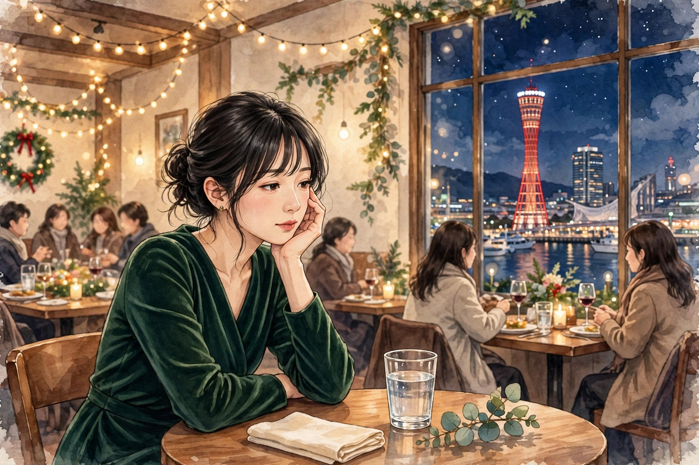

三ノ宮で忘年会続きに気になる疲労感｜要因の整理とセルフケア、受診の目安セルフケア

12月に入り、職場や友人との忘年会が週に何度も重なる時期に、朝起きても疲れが残る感じがしたり、夕方には体が重だるく感じたりする方へ。忘年会が続く時期に目立ちやすい疲労感について、一般的な解説と考えられる要因、この時期に取り入れられるセルフケア、受診の目安を整理しました。
疲労感とは — 忘年会が続く時期に気になりやすい全身の重だるさ
疲労感は、体や頭が重だるく感じたり、休んでもすっきりしない感じが残ったりする感覚を指す、日常的によく使われる言葉です。感じ方には、朝起きても疲れが抜けた感じがしない、夕方になると体が鉛のように重く感じる、肩や首まで重だるさが広がる感じがする、集中が続きにくい感じがする、といった表れ方があり、程度には個人差があります。12月の忘年会シーズンには、「会の翌朝は体が重く、仕事に集中しにくい気がする」「週の半ばには、もう週末のような疲れを感じる」「楽しい集まりのはずなのに、続くと体がついていかない気がする」「帰宅が遅い日が続くと、休んだはずなのに疲れが残る感じがする」といった声を聞くことがあります。疲労感そのものは季節を問わず語られるテーマですが、忘年会が続く時期は、夜の予定の重なりや生活リズムの変化が重なりやすい点が特徴とされます。仕事帰りの場面に絞った記事三ノ宮で仕事帰りに気になる疲労感｜要因の整理とセルフケア、受診の目安、週末の場面に絞った記事三ノ宮で週末に整えたい疲労感｜休みの日の過ごし方とセルフケア、受診の目安も公開しています。この記事では場面を12月の忘年会が続く時期に絞って眺めます。ここでは原因を一つに決めつけず、考えられる要因と、この時期の過ごし方を整理します。
疲労感と重なって感じやすい場所の目安は、図1のとおりです。
図1｜疲労感と重なって感じやすい頭・首・肩（正面）

考えられる要因
要因は一つとは限りません。まず予定の面では、忘年会が続くと帰宅が遅くなりやすく、食事や入浴、寝る時間も後ろへずれ込みやすいことが挙げられます。眠る時間が短くなったり、眠りが浅くなったりする日が重なると、翌日に疲れが残る感じにつながる場合があるとされます。食事の面では、会食では食事の量や内容が普段と変わりやすく、遅い時間の食事や、お酒を飲む機会が増えることも、翌朝の重だるさと重なって感じられることがあります。お酒については、眠りを浅くする一因として語られることもあります。移動の面では、夜の冷たい外気を浴びながらの移動や、店から駅までの歩行が重なることもあります。仕事の面では、12月は仕事の区切りや年末の準備で日中の負担も増えやすい時期で、夜の予定と日中の忙しさが重なることが、疲労感として感じられる場合があるようです。気持ちの面では、楽しい集まりでも、にぎやかな場が続くと緊張や気づかいが重なり、帰宅後にどっと疲れを感じる方もいらっしゃいます。東洋医学では、疲労感は気・血の巡りや、体を休ませる力のバランスの変化として捉えられてきました。体のだるさそのものの考え方は体のだるさのお悩み別ケアページにもまとめています。忘年会が何回あった週に疲れを強く感じたかを、帰宅時間や眠りの様子とあわせて簡単にメモしておくと、ご自身のパターンを眺める参考になります。
忘年会が続く時期に取り入れられるセルフケア
まずは、予定が多い時期でも取り入れやすい小さな工夫から始めてみてください。会の日の工夫としては、食事の合間に水やお茶を挟む、席を立つついでに少し歩く、といった過ごし方が日常で取り入れやすいケアです。帰宅後の面では、遅い時間でもシャワーで済ませず短時間でも湯船につかる、帰宅後は温かい飲み物をとってひと息つく、照明を少し落として休む準備を早めに始める、寝る前のスマートフォン時間を短くする、といった工夫が翌日に向けた過ごし方とされます。眠りについてはよく眠るための夜の工夫｜照明・入浴・スマホとの距離の取り方もあわせてご覧ください。会のない日の面では、予定を入れない夜を週のどこかに残しておく、夕食を軽めにして早めに休む、といった「休む日」を先に決めておく過ごし方も考えられます。体を動かす面では、昼休みや移動の合間に少し歩く、肩を大きくゆっくり回す、首をそっと傾ける、胸を開いて深呼吸をする、といった小さな動きを挟むと、同じ姿勢が続いた体を動かすきっかけになります。朝の面では、起きてすぐにカーテンを開けて光を浴びる、温かい飲み物をとる、といった始まりの工夫も意識しやすい方法です。体を温めるケアは、熱すぎる温度で長く当て続けたりせず、気持ちよい範囲にとどめることが続けるうえでの目安になります。無理のない範囲で、一つか二つ選ぶところから始めてみてください。
セルフケアで意識したい場所の目安は、図2のとおりです。
図2｜温めたり動かしたりするときに意識したい首・肩甲骨まわり・背中（背面）

受診の目安
疲労感が数週間以上続く、または少しずつ強くなっている、十分に休んでも重だるさが残り続ける、発熱がある、体重が短い期間で大きく変わった、動悸や息苦しさがある、強い眠気が日中も続いて日常生活や仕事に支障が出ている、気持ちの落ち込みが続いている——こうした場合は、自己判断で様子を見続けず、内科などの医療機関への相談をご検討ください。疲労感は、体のほかの変化の表れとして感じられる場合もあるとされるため、原因を一つに決めつけずに相談することが目安になります。当店の施術はリラクゼーションを目的としたもので、症状の診断・治療を行うものではありません。気になる症状があるときは、まず医療機関で相談したうえで、日常のケアの一つとしてサロンのご利用をお考えください。
三ノ宮で、忘年会が続く時期に体を休める時間を
ステラスピカは神戸・三ノ宮エリアの女性専用サロンです。営業時間は月〜土17:00〜22:00（日曜休み・完全予約制）で、夕方から夜の時間帯にご利用いただけます。忘年会が続く時期も、予定の合間の夕方の時間を、体を休める時間にあてる方がいらっしゃいます。完全個室でご案内します。オイルマッサージ／美容整体は90分10,000円（税込）で、施術歴30年のセラピストが、その日の体調や気になるお悩みをうかがいながら、その日の状態に合わせて無理のない圧と内容で全身をケアする施術を組み立てます。施術では、首・肩・背中から脚へ、つながりを意識しながら丁寧にほぐしていきます。なお、ステラスピカは近日開院予定のため、ご予約の受付はまだ開始していません。受付開始はこのページでご案内します。料金やメニューの詳細はメニュー・料金、開院後のご予約の流れはご予約・お問い合わせをご覧ください。
ステラスピカ（三ノ宮） — 女性専用、90分 10,000円、月〜土17:00〜22:00、完全予約制です。